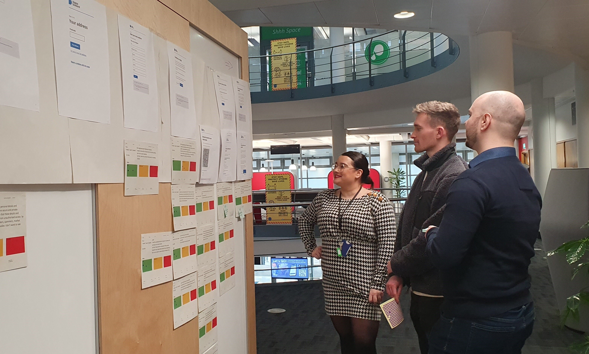

The Scottish Government
ScotAccount
Digital identity verification service for the Scottish Public Sector
A single login that allows citizens to access public sector organisations
Identity verification and data vault, so citizens can reuse stored details
ScotAccount is one of the Common Platforms prioritised in the Scottish Government's Digital Strategy, underpinning an approach where organisations can focus on front-line service delivery because they’re not wasting time reinventing or operating back-office processes that are best delivered in collaboration
future scot article: Current use cases include for those applying for a level 1 service with Disclosure Scotland – which conducts background checks on people applying for jobs with vulnerable groups – and for witnesses in court cases, and for those involved in bankruptcy proceedings.
in full alignment with the Digital Scotland Service Standard which aims to ensure that services are continually improving and user-focused. Throughout its development, ScotAccount also worked incrementally towards full accordance with ‘Good Practice Guide (GPG) 45 – How to prove and verify someone’s identity’. Issued by the Government Digital Service in 2014, GPG 45 has become recognised as the standard against which digital identity verification services are measured and is aligned with the EU’s eIDAS regulations. At Scott Logic, our engineers and designers are very experienced in building services that operate in highly regulated environments. In line with the Scottish Government’s ‘Principles of a Digital Nation’, they adopted a Secure by Design approach throughout the delivery of ScotAccount, working in close collaboration with the government’s security experts. A key milestone on the roadmap was achieved with the launch of a Private Beta for testing with users of Disclosure Scotland allowing all aspects of the service to be tested in controlled conditions – including security, resilience and usability
Public services in Scotland require various types of identification, but there is plenty of overlap between different services. When a user’s identity document is verified to access one public service, it is saved in MySafe as a verified ‘attribute’, and can be used individually or in combination to access other services. MySafe will enhance ScotAccount’s inclusivity over time, offering users the ability to store and share verification methods that are alternatives to biometric identity documents.
Rounds of user research have fed into every stage of ScotAccount’s implementation, helping to gain an understanding of users’ concerns and the trade-offs they are prepared to make, while simultaneously building trust in the new service. This research has informed the work of Scott Logic’s UX experts in shaping the service’s user journeys, and they contributed some of their design solutions – including patterns and behaviour logic for the account creation process, and a show and hide function for the password pattern – to the Scottish Government Design System. This is a library of design standards and patterns that can be reused and adopted across the public sector.
SL: a secure sign-in for end users; an identity verification journey; an attribute store

Key Stats
- John Swinney: half a million users by the end of 2025
- 9,000 new identities being created every week (swinney 2025)
- Secure and compliant with GDPR
- Integrated with over 50 public sector services

ScotAccount will continue to be integrated into new and existing online public services, providing citizens with inclusive, secure access while minimising fraud and delivering value for money to Scottish taxpayers.